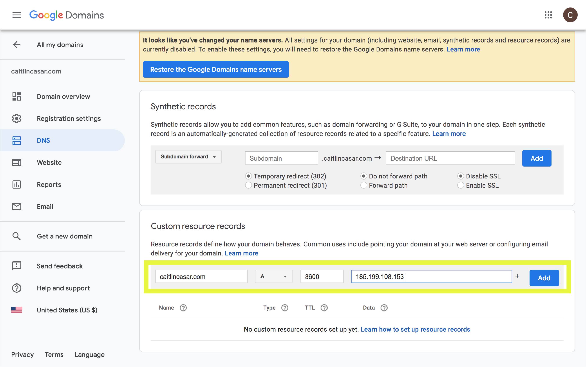

Wanna create and host your own site for free? I’ll show you how I created and hosted my site caitlincasar.com! We’ll go over the two basic tools I used: the blogdown package in R and Github Pages.
Blogdown
To create the site, I used a package in R called blogdown. This is a great package that makes it really easy to create and update your site using R markdown. If you’re using RStudio with blogdown, you can serve the site locally and preview it right in your RStudio viewer window. It’s super easy to customize your CSS (cascading style sheet) - this is an easy way to change the styling of HTML elements across your site, such as font styles or colors. Blogdown integrates Hugo, a static site generator that has tons of awesome themes ready to go! For this site, I chose the Hugo Academic theme. I’ll walk you through the basics of blogdown, then show you how to create a new blog post!
Install R and Rstudio
Install the blogdown package. You can do this in RStudio by entering the following in the console window in RStudio:
install.packages("blogdown")

To use Hugo in blogdown, install Hugo:
blogdown::install_hugo()
To generate the Hugo academic theme template site, run the following line in your RStudio console.
blogdown::new_site(theme = 'gcushen/hugo-academic')
To preview your site in the Viewer window, you can either select “Serve site” from the Addins dropdown menu in RStudio, or run the following in your console:
blogdown::serve_site()
When you are ready to build your site to HTML format for web hosting, run the following in your console:
blogdown::hugo_build(local=T)
Check out your Files window in RStudio. You should see a list of files and directories similar to this:
The content folder contains the markdown files used to build the site. The public folder contains the files generated by the hugo_build function.
I version control my code used to generate my site - in case I break something, I can easily revert back to a working version. To do this, create a git repo for your code by running the following in your terminal:
#change directories to the blodgown directory you created. For example, if you have a directory called "blogdown_site" on your desktop:
cd ~/Desktop/blogdown_site
#initialize a git repository in the directory
git init
#add all the files to the queue
git add .
#commit the changes and add a short message
git commit -a -m "init commit"
Now you have a local repository. In order to host that repo on Github, go to github.com and create a new repository by clicking the green “new” button in the top right. Don’t initialize a README file. Give your repo a name, for example “my_website”. Then click “Create repository” at the bottom.
In your terminal, run the following:
#push your repo to the Github server - note that 'username' should be replaced with your Github username and 'my_website' should be replaced with the name of the repo you created on Github.
git remote add origin https://github.com/username/my_website
git push -u origin master
You can see my blogdown code repo here. Now you’re ready to host your site online! I host my site for free on Github Pages. This generates a domain in the format ‘your_github_user_name.github.io’. It’s affordable and easy to mask this domain with a custom domain of your choice. I bought my domain on Google domains for an annual fee of $12. This is totally optional - if this interests you, refer to my guide at the end of this post under ‘Using a custom domain’!
-
First you’ll need to create a new repo named username.github.io. Don’t initialize it with a README file. To create my site, I created a repo using my Github user name ‘caitlincasar’ on Github called caitlincasar.github.io. You can see this repo here.
-
Next, initialize a repo in your public folder in your blogdown directory and push the repo to your github.io repo:
#change directories into your public folder - this is where the site builds to when you run blogdown::hugo_build(local=T)
cd ~/Desktop/blogdown_site/public
#initialize a git repository in the directory
git init
#add all the files to the queue
git add .
#commit the changes and add a short message
git commit -a -m "init commit"
#push your repo to the github server
git remote add origin https://github.com/username/username.github.io
git push -u origin master
To view your site, go to https://username.github.io/ in your web browser.
Create a new post
We’re finally ready to create a new post! If you cloned the NUEarthGrads repo, open that folder and double click on the blogdown.Rproj file to open the project in RStudio.
Run the following in your RStudio console:
#run the blogdown new_post function to generate a new markdown file in the post directory with today's date
blogdown::new_post(title = "my blog post title", subdir="post/my_blog_post_directory", date = "June 9 2020")
The Hugo academic theme will add an image next to your post on the home page. To do this, add the image you want to be associated with your post inside the new directory you just created - in this example the directory is called “my_blog_post_directory”. Name the image “featured”, as in “featured.jpg”. Then, rename your new markdown file “index”, as in “index.Rmd”.
Open up the markdown file you just created. You can do this from RStudio by navigating to the file in the Files window pane via the following path: content >> post >>my_blog_post_directory. Then double click on the markdown file.
To preview your new post, click on the Viewer tab. You should see something like this:
You should edit the header to include your post name, date of the post, summary, etc. Here’s an exaple of how to modify the header:
---
title: my blog post title
author: ~
date: June 9 2020
slug: June 9 2020-my blog post title
categories: ["Diversity"] #add categories for your post inside the brackets
tags: ["#BLM", "equity"] #add tags inside the brackets
subtitle: 'This is my post!'
summary: 'Some info here about this post...This is what will be displayed on the home page.'
authors: [Caitlin] #add your name inside these brackets to indicate who authored the post
lastmod: '2020-06-09T15:36:45-05:00'
featured: no
image:
caption: ''
focal_point: ''
preview_only: no
projects: []
---
Now you’re ready to add content to your post. Add Rmarkdown formatted text below the header in your markdown file, including images, hyperlinks, plots, code chunks, videos, and more! Here’s an example of some basic content:
---
title: my blog post title
author: ~
date: June 9 2020
slug: June 9 2020-my blog post title
categories: ["Diversity"] #add categories for your post inside the brackets
tags: ["#BLM", "equity"] #add tags inside the brackets
subtitle: 'This is my post!'
summary: 'Some info here about this post...This is what will be displayed on the home page.'
authors: [Caitlin] #add your name inside these brackets to indicate who authored the post
lastmod: '2020-06-09T15:36:45-05:00'
featured: no
image:
caption: ''
focal_point: ''
preview_only: no
projects: []
---
Hello! This is my *first* blog post! I am **very** excited to share my post with you. I learned how to make this post [here](https://caitlincasar.com/post/blogdown/).
## Subheader
This is a new section under a subheader. I can make an ordered list:
1. This is item 1
2. This is item 2
3. And this is item 3!
This is great resource for more of the Rmarkdown basics.
Once you’re done creating your post, just push your changes to Github and you’re done!
#change directories into your public folder - this is where the site builds to when you run blogdown::hugo_build(local=T)
cd ~/Desktop/blogdown_site/public
#pull in any changes that others may have pushed to Github
git pull
#add the new file
git add .
#commit the changes
git commit -a -m "adding Caitlin's new blog post"
#push the changes to the Github server
git push
Now you can see your awesome new post online! Hooray! üê∏
Using a custom domain
Don’t like the github.io subdomain and TLD (top-level domain)? You can buy your own on Google domains! I pay a $12 annual fee for caitlincasar.com. We’ll walk through the steps here:
Go to Google domains and search for a domain name to see if it’s available.
Select the domain you want, then add it to your shopping cart.

Go to your shopping cart and click on the blue ‘check out’ button to review your purchase. Make sure your contact info is correct and enter your credit card, then click the blue ‘buy’ button.
Next, go to your google domains account and select ‘my domains’ on the left side panel. Then select the ‘manage’ link next to your domain.
- Click on ‘DNS’ on the left side panel. Then select ‘Use the Google Domains name servers’. Then click the blue ‘save’ button.
- Scroll to the bottom of the page and create an alias for your domain, then click the blue ‘Add’ button. You can use one of four IP addresses for Github:
185.199.108.153
185.199.109.153
185.199.110.153
185.199.111.153

- Finally, we’ll need to update the domain name on Github. Navigate to your username.github.io repo, then select ‘Settings’.
Scroll down to the Github Pages section and enter your custom domain name. It make take a few hours for your new domain name to register, after which you’ll be able to check the box under ‘Enforce HTTPS’. This enables https encryption on your site to prevent man-in-the-middle attacks.
You should now be able to see your site when you navigate to your custom domain in your web browser. Congrats on creating and hosting your own site! Feel free to comment below with any comments/questions üòé